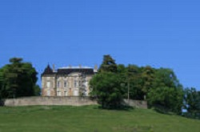
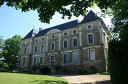
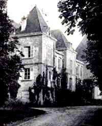

Recensement Jean-Claude Truffet
| Département | 71 — Saône-et-Loire |
| Canton | St-Gengoux-le-National |
| Commune | Chapaize |
| Type d'édifice | Château |
| Période d'origine | XVII |



UXELLES, trois châteaux, un du XVIIIe siècle, un du XIXe siècle dans le bourg et celui d'Uxelles, Bernard Ier le Lion, seigneur de Brancion, fait bâtir en 1070 une forteresse. Landry le Hardi, lui succède vers 1110. Puis à la première moitié du XIIe siècle, de père en fils Bernard II le Preux, lui succède, ensuite en 1147 Jocerand II et en 1180 Henri Ier. Josserand III, Henri II, lui succède vers 1214.
Maison de Bourgogne en 1259 son père s'étant ruiné pour suivre Louis IX en Égypte, Henri II, sans postérité, vend Uxelles au duc de Bourgogne, passa à la famille de Blanot; son fils fait don en 1263 d'Uxelles au juriste Jean de Blanot, puis à la famille de Saint-Germain.
Au début du XIVe siècle Arthaud de Saint-Germain devient seigneur d'Uxelles par alliance avec Isabelle de Blanot, a sa mort, en 1375 passe à ses fils Arthaud et Jacques de Saint-Germain qui se le disputent âprement, tandis que le château est laissé à l'abandon.
Famille Magnien en 1489 et 1490 après une série de transmissions par les femmes qui entretiènent une certaine confusion, les divers éléments de la seigneurie sont rachetés par Jean de Sercy qui agit comme prête-nom de Philibert Magnien, conseiller du roi, maître des comptes, élu du Mâconnais famille de Sercy, passe en 1508 au profit de Jean de Sercy. Au XVIe siècle Jacqueline de Sercy, épouse d'Antoine de Semur, reçoit Uxelles de son frère Philippe.
Famille Du Blé en 1560, Pétrarque Du Blé, seigneur de Cormatin, en échange de Sercy, le fils, Antoine Du Blé, délaisse en 1616 Uxelles pour construire un nouveau château à Cormatin où vont désormais résider les Du Blé. la seigneurie est érigée en marquisat en 1618.
et au milieu du XVIIe siècle Louis Chalon Du Blé est marquis d'Uxelles. Au décès de Nicolas Chalon Du Blé, marquis d'Uxelles et fils, le domaine change de main en1730.
Famille de La Chapelle 1812, Charles-Hippolyte, vicomte de La Chapelle, chef d'escadron de la garde royale, achète le domaine, il va restaurer une partie du logis principal et abattre les ruines de la cour extérieure et du donjon pour aménager, à leur emplacement, un jardin anglais. En 1835 conseillé par l'architecte versaillais Du Thil, Charles-Henri de La Chapelle fait tout raser et édifie une nouvelle demeure à l'emplacement de l'ancienne cour d'honneur.
Au XXe siècle, propriété de Bernard vicomte de La Chapelle.
UXELLES a Chapaize; Le château se composait de deux enceintes. La première, dont les murailles de 2,65 mètres d'épaisseur avec chemin de ronde défendu par un parapet à créneaux , d'un fossé et d'une contrescarpe et comprenait quatre portes, la porte principale sous une tour carrée hors uvre que précédait un pont-levis, une petite porte sous une autre tour carrée beaucoup moins importante, et deux poternes ouvertes dans la courtine, des communs, reconstruits au XVIIIe siècle, étaient adossés à la muraille de part et d'autre de l'entrée principale; une chapelle dédiée à Saint Georges avait été construite dans la cour, sans doute à la fin du XIIIe siècle.
La seconde enceinte était flanquée de quatre tours et pourvue, dans sa partie orientale , de mâchicoulis découverts sans contrefort avec parapet sur arcs en plein cintre, une partie des mâchicoulis avait été supprimée au XVe siècle ou au début du XVIe siècle, lorsqu'on avait rehaussé les murs et appliqué contre eux des logis et des communs. Au nord-est, une tour carrée à cheval sur la muraille était percée au rez-de-chaussée d'une porte en plein cintre en bossage rustique, deux tours rondes étaient situées à l'est et à l'ouest, une tour rectangulaire, dite tour du Colombier, au sud-est, cette enceinte était divisée en quatre parties: une première petite cour dans laquelle s'élevait une grosse tour pentagonale de sept étages, la cour d'honneur autour de laquelle s'ordonnait des communs et, au sud, le corps de logis principal flanqué d'une tour d'escalier trapézoïdale, une cour étroite entourée de divers bâtiments que flanquait la grosse tour ronde qui passait pour être le donjon primitif à l'ouest, et enfin une terrasse au sud-ouest.
Tout cela a disparu pour faire place à un corps de logis de plan rectangulaire allongé entre deux ailes en retour d'équerre en légère avancée sur ses deux façades, l'avant-corps central est couronné par un fronton cintré. Dans la commune le château de Chapaize, le château du bourg XVIIIe siècle.
Famille Magnien
"
Château d'Uxelles et de Chapaize